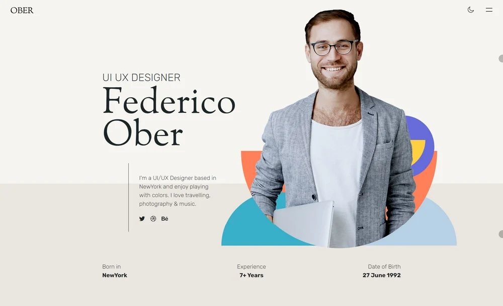
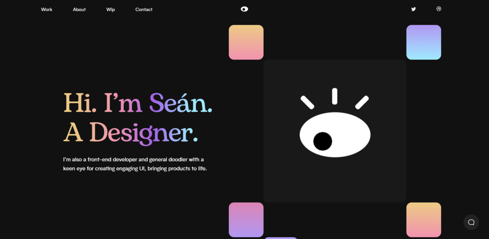
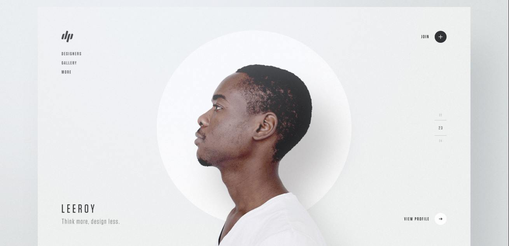
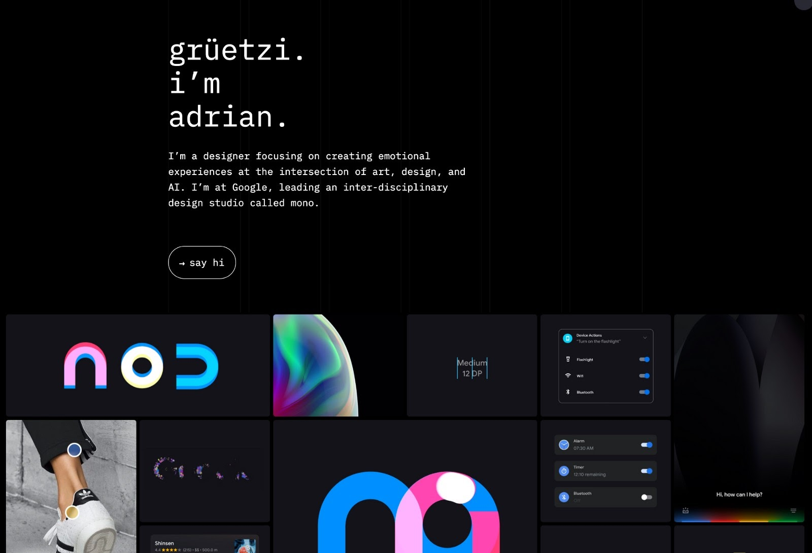
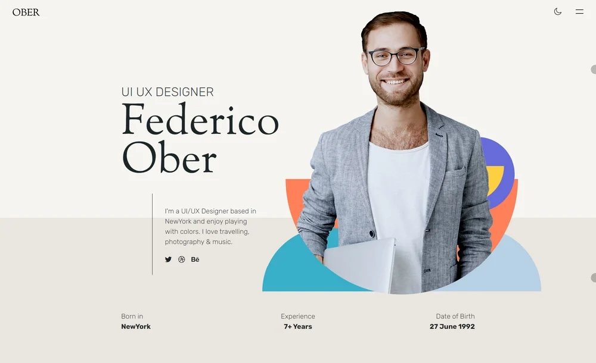
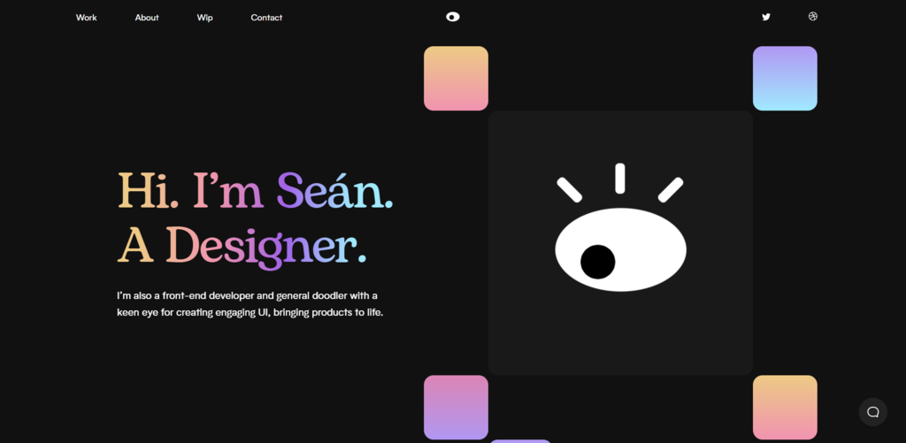
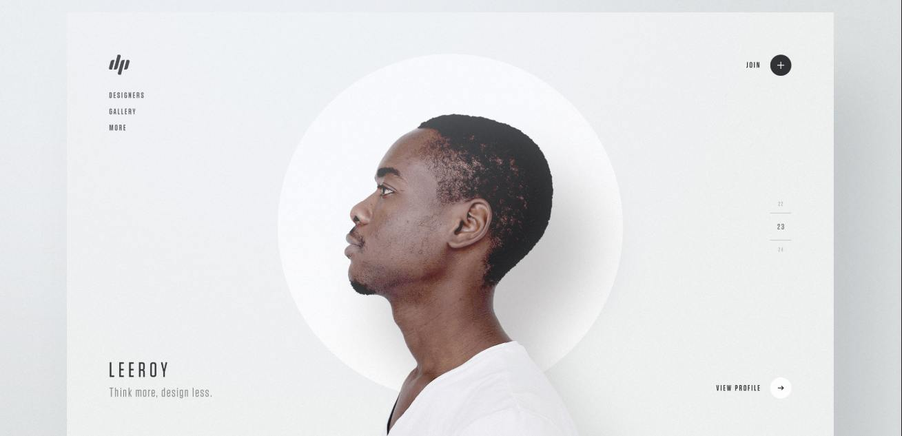
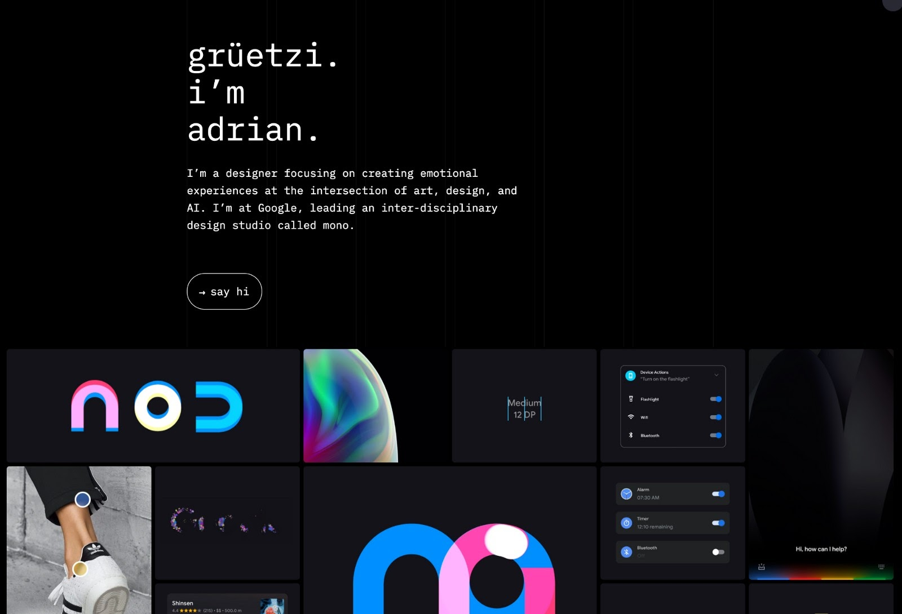

About me:
My name is Tim, I’m 18 years old and I’m from Brest, Belarus. I've finished high school in Greece after living there for 7 years. While being in school I've studied basics of Python, Java, Ethical Hacking, Web Development and Algorithms. After finishing the school exams, I've started the Epicode Full Stack Dev. course. Moreover, I know perfectly how to speak Greek, Russian, English (certified C2) and I'm currently learning Polish. I’m constantly learning & trying to become the best version of myself by studying, exercising & coding every single day.
2004
Probably I was born
2009
Lego and stuff
2013
Don't remember anything to be honest
2016
3 years in the 2nd Middle School of Thessaloniki.
2019
I've been accepted to 2nd High School of Thessaloniki, Greece.
2022
I've graduated from 2nd High School of Thessaloniki and moved to Warsaw, Poland. Later in Warsaw I've started studying Web Development and without hesitation applied to Epicode's Courses.


 






